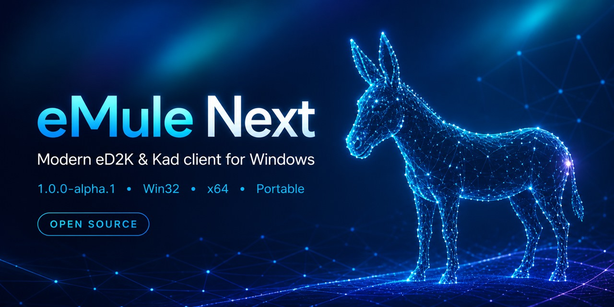
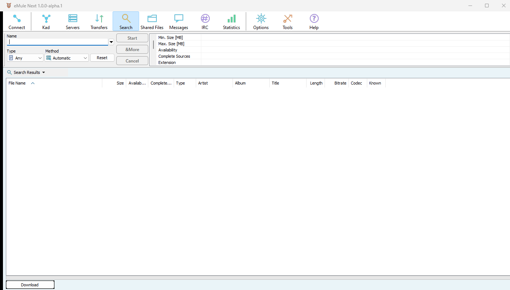
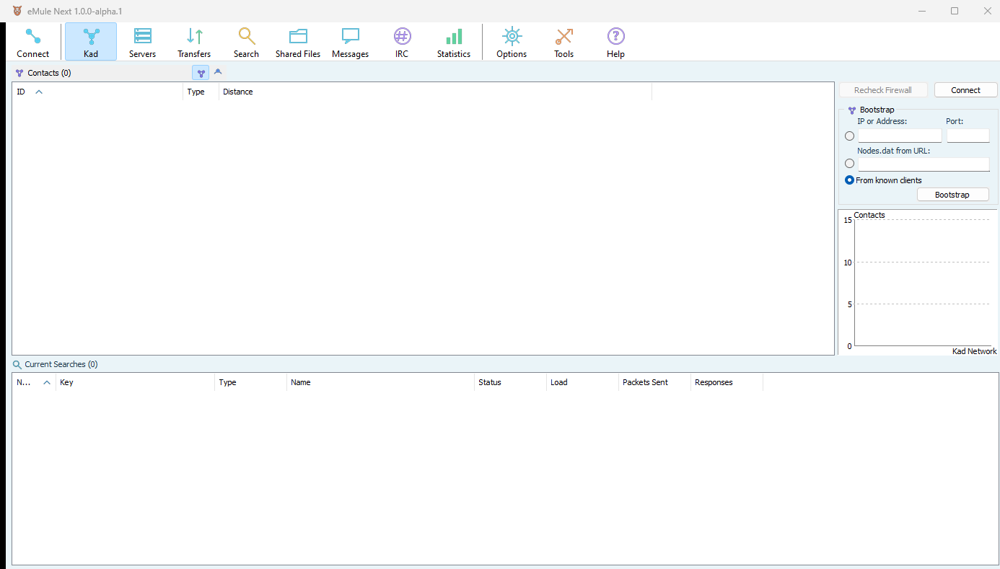
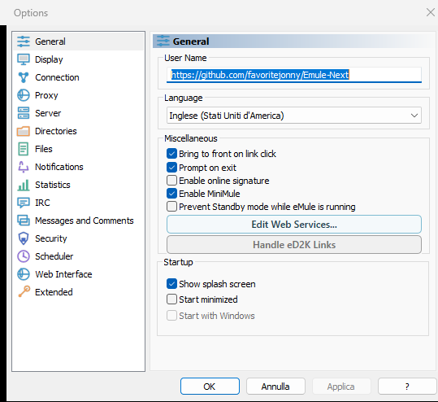

Compatible by design
Connect to established eD2K servers and the decentralised Kad network without leaving the wider eMule ecosystem.
Public Alpha · Open source
A carefully modernised Windows client for the existing eD2K and Kad networks—portable, multilingual and built without ads or project telemetry.
Version 1.0.0-alpha.1 · Windows · No installer required

Familiar network. Better first impression.
eMule Next keeps the network behaviour users depend on while improving the Windows experience step by step.
Connect to established eD2K servers and the decentralised Kad network without leaving the wider eMule ecosystem.
Choose x64 for modern PCs or Win32 where needed. Extract the ZIP to a writable folder and launch the client.
A refreshed Modern Light theme, updated icons and a guided first-run experience make essential settings easier to understand.
The project collects no analytics, telemetry or automatic crash reports. Normal peer-to-peer traffic is still visible to participating peers.
Inside the client
The controls eMule users know remain close at hand, with cleaner icons and lighter visual structure.



Download with confidence
This is a public Alpha intended for testing. The current executable is not digitally signed, so Windows SmartScreen may show a warning.
Read the SmartScreen guideDownload only from the eMule Next GitHub or SourceForge project pages.
Compare the SHA-256 value before running an unsigned build.
Download and distribute only material you are authorised to use.
Help shape the next release
We are looking for practical reports about first launch, connections, large shared folders, long-running uploads and language quality.